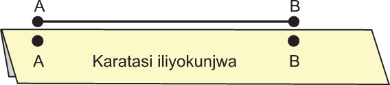
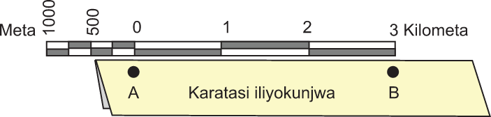

(b) Chukua kipande cha karatasi, kunja kupata ukingo ulionyooka. Laza ukingo huo sambamba na mstari AB na uweke kwa usahihi na kuandika alama kufuata mstari AB. Hakikisha unalingana kabisa na alama A na B kama inavyoonekana katika Kielelezo namba 5.

Kielelezo namba 5: Kupima umbali kutoka kituo A hadi B kwa kutumia kipande cha karatasi
(c) Umbali kutoka kituo A hadi B kwenye kipande cha karatasi unaweza kubadilishwa kuwa umbali halisi kwenye ardhi kwa kutumia skeli ya mstari au skeli ya uwiano. Kwa kutumia skeli ya mstari kipande cha karatasi huwekwa sambamba na skeli ya mstari kwa kuoanisha kituo A na sifuri (0) na kituo B upande wa kulia wa skeli ya mstari. Iwapo kituo B kitaoana na namba fulani kwenye skeli kama inavyoonekana kwenye kielelezo namba 6, namba hiyo huwakilisha umbali halisi kwenye ardhi kutoka kituo A hadi B. Kwahiiyo, umbali wa kwenye ardhi kutoka kituo A hadi B ni kilometa 3

Kielelezo namba 6: Kituo B kimeoana na namba 3 inayowakilisha umbali wa kilometa 3 kutoka kituo A hadi B
JIOGRAFIA NA MAZINGIRA DARASA LA 4.indd 58
12/09/2025 16:33